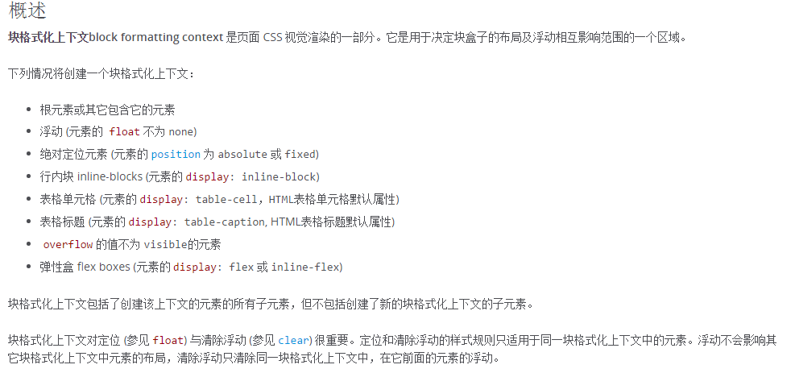

CSS篇01--从清除浮动说起
更新日期:
前言
我们知道元素浮动后其容器高度会塌陷，这常常不是我们想要的，因此我们需要清除浮动，更确切的说法是清除因为浮动带来的效果。而我们一般通过触发BFC或者利用clear来清除浮动，IE则通过触发haslayout来实现。接下来我将谈谈自己对容器高度塌陷和这两种方法的理解。
为什么元素浮动后其容器高度会塌陷？
文档流
经常听到文档流的说法，但是在W3C规范中并没有发现document flow这个概念，只有常规流(normal flow)。在常规流中，元素按照其在 HTML 中的先后位置至上而下布局，在这个过程中，行内元素水平排列，直到当行被占满然后换行，块级元素则会被渲染为完整的一个新行，除非另外指定，否则所有元素默认都是普通流定位，也可以说，普通流中元素的位置由该元素在 HTML 文档中的位置决定。文档流也可以认为是一层一层嵌套的，因此n多个空div嵌套，最外面那个div高度仍为0（本文float元素容器默认都是指div，其他块级元素其实效果一样，只是可能会有默认的样式，因此高度不一定为0）。
浮动(float)
float的引入最初是为了解决图文混排的，元素float后会脱离文档流，而div的高度默认是里面文档流的高度，因此容器内若没有其他文档流，容器高度为0。
清除浮动的两种方法
触发BFC来清除浮动
BFC(block formatting context)俗称块级格式化上下文。下图是MDN的一些总结。

BFC有一下特性：
1.内部的Box会在垂直方向，从顶部开始一个接一个地放置。
2.Box垂直方向的距离由margin决定。属于同一个BFC的两个相邻Box的margin会发生叠加
3.每个元素的margin box的左边， 与包含块border box的左边相接触(对于从左往右的格式化，否则相反)。即使存在浮动也是如此。
4.BFC的区域不会与float box叠加。
5.BFC就是页面上的一个隔离的独立容器，容器里面的子元素不会影响到外面的元素，反之亦然。
6.计算BFC的高度时，浮动元素也参与计算。
正因为性质6，可以利用BFC来清除浮动。
参考：
1.CSS之BFC详解
通过clear:both来清除浮动
1.底部加html block水平元素：
<div style="clear:both;"></div>
2.css after伪元素底部生成：
.clearfix::after{content: ""; display: block; clear: both;}
.clearfix{*zoom: 1;} // IE hack
PS.我们常见的是clearfix:after这种写法,中间不是两个:，两个是css3的写法，是一种改进，一个是css2的设计失误，不够优雅，一个表示状态,是伪类，两个是伪元素，CSS3对这两种进行了区分。如不用兼容IE8，最好用两个:的写法。
为什么可以通过clear:both来清除浮动呢？
1.如前所诉，容器高度默认是里面文档流的高度
2.带有clear:both的元素左右不能有浮动元素，元素加上clear:both能让它在所有浮动元素的下面，从而撑起了容器高度。